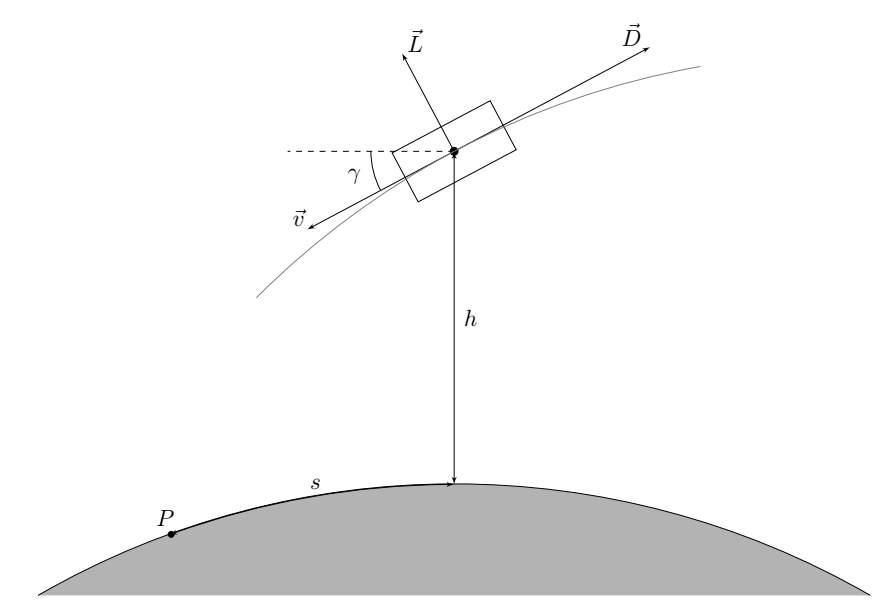

X25 (2025) — English translation
Usually, when studying the dynamics of a body in a gravitational field, it is assumed that there are no frictional forces and the law of conservation of energy can be used. From this assumption one can obtain Kepler's laws, which describe with good accuracy both the behavior of planets and the movement of artificial satellites. However, at the initial and final stages of the spacecraft’s movement, it interacts with the planet’s atmosphere (if there is one), so air resistance forces significantly affect its trajectory. In this problem, we explore several simple models that allow us to evaluate the results of such influence. Further, for definiteness, we assume that the spacecraft is moving near the Earth.
A spacecraft moving in the atmosphere is subject to a gravitational force directed toward the center of the Earth, an air resistance force $D$ directed against the speed, and a lift force $L$ perpendicular to the speed. These forces are given by the expressions $$ D = \frac{1}{2} \rho v^2 S C_D, \qquad L = \frac{1}{2} \rho v^2 S C_L, $$где $\rho$ – плотность окружающего воздуха, $S$ – характерная площадь поперечного сечения космического корабля, $v$ – его скорость относительно воздуха, $C_D$ $C_L$ – безразмерные коэффициенты. Вообще говоря эти коэффициенты сами могут зависеть от скорости космического корабля, но в рамках этой задачи мы будем считать их постоянными. В рамках задачи считайте, что движение корабля происходит в одной фиксированной плоскости, проходящей через центр Земли. Все силы лежат в этой плоскости. Будем использовать модель атмосферы, в которой зависимость плотности от высоты задается формулой $ $ \rho = \rho_0 e^{-\beta~h}, $$где $h$ – высота от поверхности Земли, $\rho_0$ – плотность воздуха у поверхности Земли, $\beta$ – некоторая постоянная. Воздух атмосферы можно считать неподвижным, влияние ветра учитывать не нужно.
Во всей задаче можно использовать следующие численные данные $\rho_0 = 1.225 ~\text{kg}/\text{m}^3$ $\beta = 0.1378~\text{km}^{-1}$ Радиус Земли $r_0 = 6354~\text{km}$ Ускорение свободного падения на поверхности Земли $g_0 = 9.81~\text{m}/\text{s}^2$
The following numerical data can be used throughout the problem

At a given moment in time, the motion of a spacecraft is characterized by the magnitude of its speed $v$, the angle $\gamma$ that the speed makes with the horizontal direction at the point where the spacecraft is located (it is considered positive if the speed is directed towards the surface of the Earth), as well as the height $h$ above the surface of the Earth. Let point $P$ be the projection of the ship’s position onto the Earth’s surface at some subsequent point in time. Then we define the horizontal displacement of the spacecraft $s$ as the distance between its initial and final projection, measured along the surface of the Earth (along a circular arc). You can also use the distance $r$ from the ship to the center of the Earth.
In the general case, the resulting equations cannot be solved analytically. In order to get a qualitative idea of the flight parameters, in this part we will consider the following simplified model. We will assume that there is no lift force ($L = 0$), and the angle $\gamma$ remains constant. Then we only need to investigate the dependence of the velocity modulus on height. In this case, we can assume that the force of air resistance is much greater than the component of gravity along the velocity, so gravity can also be ignored.
The Vostok spacecraft was used for the first manned flight into space. Parameters of the reentry part of this spacecraft and its orbit Mass $m = 2460 ~\text{кг}$ Effective diameter $d = 2.3~\text{м}$ $C_D = 2.0$ $\gamma = 3.2^\circ$ $v_0 = 7.74~\text{км}/\text{с}$ $h_0 = 122~\text{км}$
The Vostok spacecraft was used for the first manned flight into space. Parameters of the return part of this ship and its orbit
In the previous part, we obtained quite large maximum acceleration values, which can lead to the destruction of the spacecraft. This acceleration can be significantly reduced by using a ship with significant lift. In order to describe the behavior of such a ship, the following approximations can be used: The angle $\gamma$ is small, $\sin \gamma \approx \gamma$, $\cos \gamma \approx 1$ The angle $\gamma$ changes very slowly during the movement, so that the contribution of the terms with $\dot{\gamma}$ in the equations of motion can be neglected. The acceleration of free fall is constant and equal to the acceleration on the Earth's surface $g_0$ The distance to the center of the Earth can be considered equal to the radius of the Earth $r \approx r_0$
In the previous part, we obtained quite large maximum acceleration values, which can lead to the destruction of the spacecraft. This acceleration can be significantly reduced by using a ship with significant lift. In order to describe the behavior of such a ship, the following approximations can be used:
Find the values of speed (in km/s) and acceleration due to air resistance (in units of $g_0$) at heights $h_1 = 80~\text{км}$, $h_1 = 60~\text{км}$, $h_1 = 40~\text{км}$.
Let's consider the process of decreasing the orbit of a ship when moving in the upper atmosphere. The ship is acted upon by a drag force from the rarefied gas $\vec F=-\alpha \vec v$. For the considered motion in the upper layers of the atmosphere, the parameter $\alpha$ can be considered approximately constant. The force is very small, so we can assume that during one revolution the energy and angular momentum of the ship change very little.
Let at the moment of time $t$ a ship of mass $m$ move along an ellipse with semimajor axis $a$ and eccentricity $e$. Earth mass $M$.
Note: It may be convenient to write the ZSE at the apocentric or periapsis point.
Let us begin to consider the effect of friction on the orbit of the ship.
To find the dependence of the ship's energy $E$ on time $t$, it is necessary to average the power of the friction force $P$ over the period of rotation of the ship. Since the energy and angular momentum change very little during one revolution, we will average the square of the velocity for orbital motion without taking into account the friction force. To do this, we use the Laplace–Runge–Lenz vector.
Note: It may be convenient to use the expression $\vec L=mr^2 \vec\omega$.
By integrating this expression over time, we can obtain: $$[\vec v, \vec L]=\beta \vec e_i+\vec A \tag1$$ Где $\vec A$ – вектор Лапласа–Рунге–Ленца, который остается постоянным для орбит в гравитационном поле. Модуль $\vec A$ связан с эксцентриситетом орбиты как $|\vec A|=\beta e$.
Note: It may be convenient to express the square of the average velocity from the averaged ZSE ($\langle T+U\rangle=\langle E\rangle$, where $T$ is the kinetic energy, $U$ is the potential energy).
Let us consider the motion of the ISS in the upper atmosphere, which began in a circular orbit at altitude $h_0$.
Source: https://pho.rs/p/4192